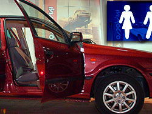

پذيرش > سایت نوشته ها > خودرو زنانه بهانه ای برای افزایش فروش و قیمت
 خودروی مخصوص زنان خودروی مخصوص زنان

 خودرو زنانه بهانه ای برای افزایش فروش و قیمت خودرو زنانه بهانه ای برای افزایش فروش و قیمت
22 مهر 1387 - ما روزنامه نگاریم / بهمن احمدی امویی - نسخه قابل چاپ
صنعت خودرو پس از نفت و بانکداری پر سودترین فعالیت اقتصادی در شبکه رسمی و ظاهرا قانونی اقتصاد ایران است .تقریبا همه کارشناسان و دست اندرکاران در این نکته هم قول هستند که این صنعت با استفاده از رانت انحصاری بازار ایران توانسته به چنین درجه ای از بازدهی اقتصادی برسد . ثبت پی در پی شرکت های خودرو سازی که عمدتا مونتاژ کار هستند ، نشانه پر سود بودن اقتصاد رسمی و غیر رسمی صنعت خودرو در ایران است .
لابی های گسترده مدیران این شرکت ها با مراکز تصمیم گیری و تصمیم سازی بیشترین تزریق نقدینگی سیستم بانکی را به این صنعت در پی داشته است . صنعتی که ایران نه در گذشته و نه در آینده کمترین مزیت نسبی را برای ادامه فعالیت در اقتصاد جهانی و در یک اقتصاد غیر رانتی ندارد. شاید بتوان بیش از یک سوم از 30 هزار کشته حوادث جاده ای ایران را ره آورد مهندسان و مدیران خودرو ساز ایرانی دانست .
در خبرها آمده بود که ایران خودرو اتومبیلی جدید با عنوان «خودروی مخصوص زنان » می سازد.خودرویی با نام سمند سایانا که روز زن سال آینده رونمایی خواهد شد.
این خودرو به گفته مسوولان ایران خودر شامل دستگاه الکترونیکی کمک به پارک اتومبیل، سیستم رهیابی و ابزار خاصی برای تعویض چرخ، دستگاه های خاص برای هشدار هنگام پنچری چرخ تعبیه می شود و قرار است این محصول با رنگ های ملایم "زنانه" تولید شود، تودوزی آن مطابق سلیقه زنان باشد و سیستم صوتی و تصویری خاصی نیز برای سرگرم کردن بچه ها در آن تعبیه شود.
مدیرانی که کم کیفیت ترین خودرو های موجود در بازار را به کمک در اختیار داشتن یک بازار تشنه و انحصاری ، به قیمت هایی چند برابر و بیش از خودرو های با کیفیت خارجی به مردم می فروشند . اینک برای فروش محصولات خود راه جدید تری را انتخاب کرده اند . فروش خودرو با دنده اتوماتیک و رنگهای متنوع به زنان و دختران ایران . به بهانه فراهم آوردن راحتی برای زنان .االبته صحبت های مدیران این شرکت خوروسازی نشان می دهد که آنان رانندگان زن را فاقد توانایی و مهارت های رانندگان مرد می دانند به همین دلیل هم تصمیم گرفته اند که این امکانات فنی را برای اتومبیل زنان در نظر بگیرند.
سال ها از به کار گیری تجهیزاتی که اینک خودرو سازان ایرانی به نصب آن ها در خودروی موسوم به زنان افتخار می کنند ، در دنیا می گذرد . تکنولوژی ترمز ای.بی اس مربوط به چند سال پیش از انقلاب ایران است . دنده اتوماتیک در رنگ ها ی متنوع و چشم نواز هم همینطور و حتی دستگاه های جهت یاب سال هاست که در تاکسی ها و خودرو های تولیدی در بسیاری از کشورها نصب می شود . جالب این که تمام این تجهزات نصب شده در این خوردوها ، این روزها جزئی لاینفک ازتولید خودرو است و ارائه آنها کمترین مزیتی را برای آن خودرو و تولید کننده آن ایجاد نمی کند .
ملت ایران تنها شانسی که آورده این است که به کمک اینترنت و انقلاب تکنولوژی اطلاعات و سفر به کشورهای خارجی این امکان را دارد تا دستاوردهای 30 – 40 سال پیش دنیا را به چشم خود ببیند و گر نه مدیران هوشمند صنعت خودرو ایران آنها را نیز به عنوان نوآوری ها و اختراعات خود به مردم می فروختند .
در حالیکه زنان ایران توان انتخاب رنگ لباس خود را ندارند و در مدارس و دانشگاه نخستین چیزی را که یاد می گیرند این است که باید لباس هایی با رنگ تیره بپوشند ، به نظر می رسد ارائه خودرو با رنگ متنوع به زنان ایران بهانه ای برای استفاده بیشتر از ظرفیت های این بازار انحصاری است . تا چند سال پیش این صنعت تمام خودرو های تولیدی خود را تنها در رنگ سفید به مردم ارائه می کرد و حالا به بهانه رنگ های متنوع قرار است به نام سفارشی پول بیشتری از این مردم بگیرند .
این روز ها مردان سبیل کلفت و لات های خیابانی هم نیازی به تعویض لاستیک خودروی خود ندارند . چه برسد به زنان . جک های اتوماتیک هم در بازار ایران وجود دارد و محصول و تولید فکر و دانش مدیران رانت خوار وطنی هم نیست . به نظر می رسد مدیران این صنعت تنها راه ماندن در این بازار انحصاری را فریب روزانه مردم می دانند . هم اکنون خودرو های روز دنیا از طریق ماهواره قادر به ردیابی و شناسایی مسیر خود هستند و البته مخصوص زنان هم نیست و در هرجای دنیا زنان و مردان از آن استفاده می کنند. به زودی خودروهای بدون راننده نیز قرار است وارد بازار دنیا شود . در این دنیا تولید خودرو با رنگ های متنوع و دنده اتوماتیک ودستگاه های مسیر یابی و بالیدن به آن حتی در کارگاه های مدل سازی هم جایی ندارد . این تولیدات مخصوص مدیران کوچک ، مردم ناتوان نگاه داشته شده و انسان هایی با افق دید کوتاه است . به بهانه افزایش سود تکنولوژی ها قدیمی را زنانه و مردانه کردن وبا قیمت های گزاف فروختن فقط ایده های مدیرانی است که تنها درسایه بده بستان با قدرت و نهادهای امنیتی قادر به ادامه حیات هستند و نه بر اساس خلاقیت و ابتکار .
ما روزنامه نگاریم
ارسال به
بالاترین
،
توییتر
،
فریندفید
،
فیسبوک
در همين بخش :
 یک خبر تلخ؟ یک قانونشکنی؟ یک تصمیم بخشنامهای جدید؟ یک خبر تلخ؟ یک قانونشکنی؟ یک تصمیم بخشنامهای جدید؟
چرا بایست به سکسوالیته پرداخت؟ / نفیسه آزاد
آزارجنسی خانگی؛ «قربانی» نه، «نجات یافته»
زنان، بزرگترین بازندگان بهار عرب
سانسور از دیدگاه جنسیتی/الهه امانی
ديگر بخش ها :
طرح یک میلیون امضا
|
مقالات
|
سایت نوشته ها
|
اخبار
|
گزارش كمپين
|
گفت و گو
|
علیه سکوت
|
كوچه به كوچه
|
نامه های شما
|
گزارش ویژه
|
گفتگو با اعضا
|
ویژه سالگرد کمپین
|
تصویر برابری
|
دل آرام علی
|
تریبون
|
مقالات
|
تاریخ شفاهی
|
خارج از چارچوب
|
کتابخانه
|
درباره کمپین
|
کمپین در شهرها
|
کمپین در بند
|
صدای تغییر
|
ویژه 22 خرداد
|
لایحه حمایت از خانواده
|
گالری
|
عشا مومنی
|
امیر یعقوبعلی
|
خدیجه مقدم
|
راحله عسگری زاده و نسیم خسروی
|
پروین اردلان،جلوه جواهری، مریم حسین خواه، ناهید کشاورز
|
زینب پیغمبرزاده
|
سعیده امین، سارا ایمانیان، محبوبه حسین زاده، ناهید کشاورز و همایون نامی
|
احترام شادفر
|
نسیم سرابندی زاده،فاطمه دهدشتی
|
وبلاگ مهمان
|
پرونده خرم آباد
|
دستگیری ها
|
مریم مالک
|
پرستو اللهیاری
|
مهرنوش اعتمادی
|
سمیه رشیدی
|
Other Languages
|
همراهان
|
«فراخوان کمپین ده روز با بهاره هدایت»
| English
|